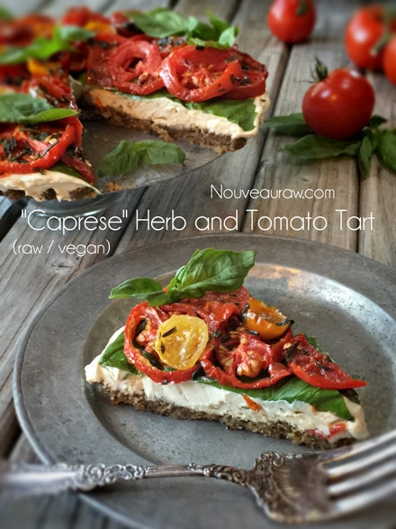
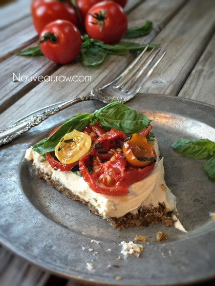
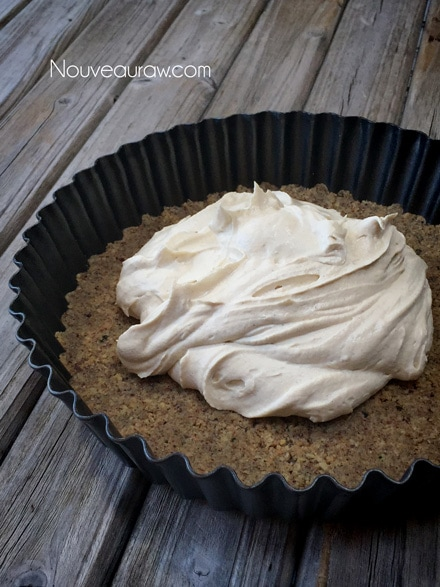
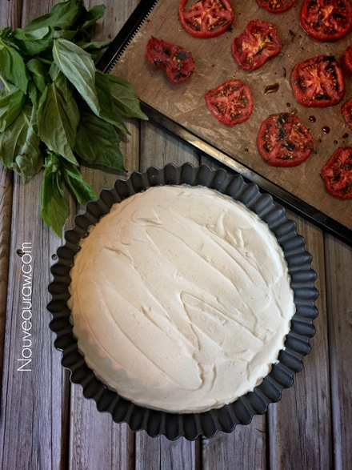
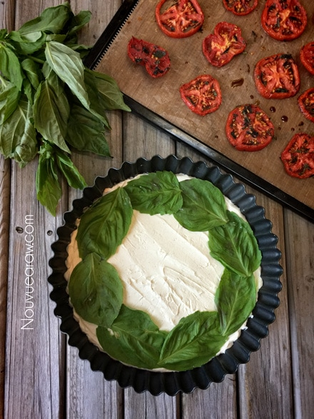
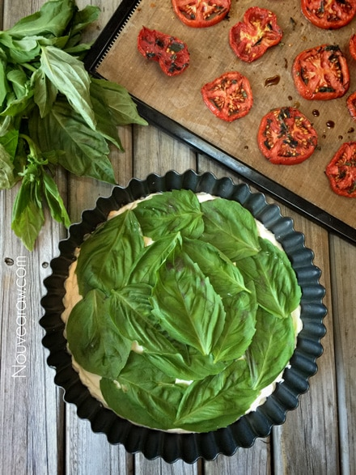
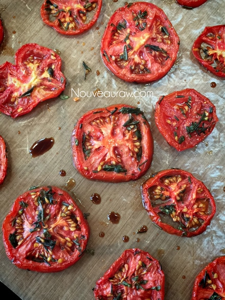
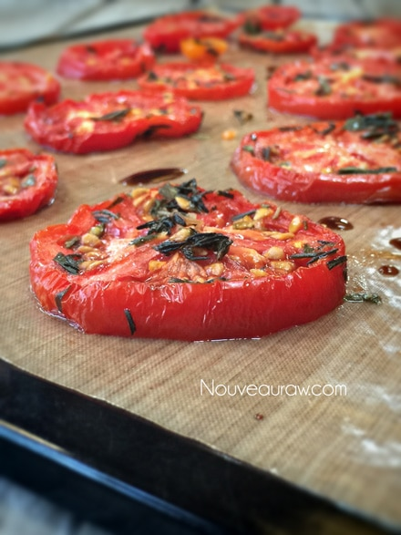
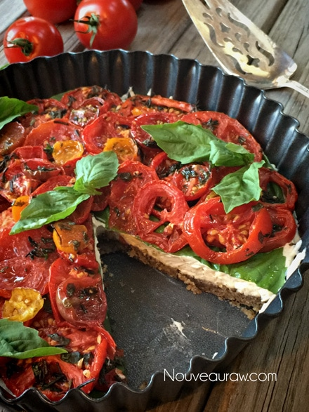
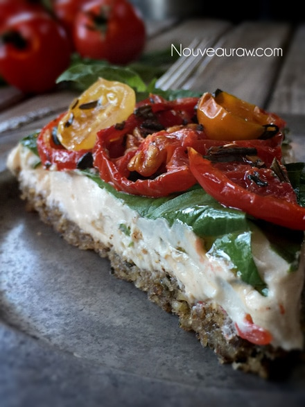

Caprese Herb and Tomato Tart | Raw

~ raw, vegan, gluten-free ~
In the cooked world, Caprese tarts consist of; puff pastry, mozzarella, sweet tomatoes, and fresh basil. Converting it to raw was quite simple. Instead of using puff pastry, I made a savory walnut crust. In place of mozzarella, I made a quick cashew “cheese” spread. All that was left was the tomatoes and basil… And making it “look” cooked.
I got this in the bag.
As you may or may not be aware, all my recipes go through taste testers. I would never ask you to just take my word for how something tastes. I love pulling in my Standard American Diet (SAD) eaters. The truth is most of them don’t care what’s in a recipe or how nutritious it is…. they just care how it tastes. And when I get “thumbs up” from them, I know that my goal has been hit. Not just nutritious but also delicious is the name of my game.
Tomato … Tamato
I want to start with the tomatoes. A dear friend of ours gifted me with a bag of homegrown organic tomatoes. What a blessing! We enjoyed many of them in their pure raw form, but I wanted to create a raw tomato dish to really wow him. So, to start, I coated the red beauties with a marinade and dehydrated them for about five hours, just enough to soften and bring out their robust flavors and to give a cooked appearance. Which in the end, fooled everyone, they thought for sure I had baked them.
Basil… Ocimum basilicum
The next layer down was fresh basil leaves. Did you know that there are more than 60 varieties of basil, all of which differ somewhat in appearance and taste? While the taste of sweet basil is bright and pungent, other varieties also offer unique tastes: lemon basil, anise basil, and cinnamon basil all have flavors that subtly reflect their name. I am not sure which one that I used, I stood in the produce section at the store, closed my eyes, and just grabbed one, well..the only one that they ever have. You know the one called: Basil. There is a reason that I placed this layer on top of the “cheese” layer. And that was to create a barrier; I knew that this tart wasn’t going to be eaten in one sitting, and I didn’t want the liquid from the tomatoes to muddle the “cheese.”
Did you use Philadelphia Cream Cheese??
The answer is a big fat… NO. I was most surprised to hear from literally everyone that this cashew-based “cheese” tasted just like Philly Cream Cheese but better. To get that cheesy flavor, I left the mixture to sit out on the counter for about 24 hours, giving it a slightly fermented flavor. They also raved about the creamy texture. The ingredients that I found essential to add to the cashews were a lemon, garlic, and chickpea miso. You can experiment with substitutes if you wish, but it will differ in flavor from what I achieved, and I, for one, am not going to mess with perfection. :)
Building a Firm Foundation
Having a firm foundation in life is vital in everything we do, including making savory crusts. I felt that walnuts were the perfect match for this recipe. Rich and buttery… and who doesn’t like that? To help give some depth in flavor, I mixed in some of the leftover marinades, to balance it all out. A wise choice because it did just that. All the beautiful layers combined in only one bite gave it that one-hit-wonder. I also dehydrated it while dehydrating the tomatoes, which gave it a drier texture. Enough of all of that, let’s get busy in the kitchen, shall we?! May blessings and may joy abound with you as you yield the mighty spatula!
Yields 9.5″ tart pan
Crust:
- 2 cups raw walnuts, soaked & dehydrated
- 2 Tbsp marinade liquid (from tomato recipe)
- 1/2 tsp black pepper
- 1/4 tsp Himalayan pink salt
Marinated Tomatoes:
- 8 small (475 g) tomatoes, sliced
- 1/4 cup olive oil
- 3 Tbsp balsamic vinegar
- 1 clove garlic, minced
- 1 Tbsp fresh basil, minced
- 1 Tbsp fresh thyme, minced
- 1 Tbsp fresh rosemary, minced
- Pinch of salt
Filling:
- 2 cups cashews, soaked 2+ hours
- 1/4 cup water
- 1 clove garlic
- 1 Tbsp fresh lemon juice
- 1 Tbsp chickpea miso
- 1/4 tsp Himalayan pink salt
- 1/2 tsp white pepper
Preparation:
Marinated Tomatoes:
- In a small bowl, combine the olive oil, balsamic vinegar, garlic, and fresh herbs. Set aside.
- Slice the tomatoes roughly 1/4″ thick and place them in a medium-sized bowl.
- Pour the marinade liquid over the tomatoes, and with your fingers, gently coast each tomato slice.
- Place on non-stick dehydrator sheets and dehydrate at 145 for 1 hour. Reduce heat to 115 and continue to dehydrate for 4-5 hours or until tomatoes are done. They should have a cooked appearance.
- Use leftover marinade liquid in the crust and as a salad dressing to go with the tart.

Crust:
- Prepare the tart pan by lining the base with plastic wrap. Set aside.
- Place the walnuts, salt, and pepper in the food processor, fitted with the “S” blade — process to a small crumble.
- It’s best to use dry walnuts for the sake of texture. Not freshly soaked.
- Add 2 Tbsp of the leftover marinade liquid and process until the crust batter sticks together when pinched.
- Loosely place the crust batter evenly over the base of the tart pan.
- Press the crust firmly and evenly into the base.
- Slide into the dehydrator along with the tomatoes. Dry until the tomatoes are done.
Filling:
- After soaking the cashews, drain and discard the soak water.
- In a high-speed blender, combine the cashews, water, garlic, lemon juice, miso, salt, and pepper. Start on low, increasing to high. Blend until creamy, and no grit can be detected.
- Pour into a bowl and lightly cover with a cloth. Let it rest on the counter for 24 hours to ferment slightly.
- You can skip the fermenting process, but I don’t recommend it.
- After it sits for 24 hours, you will notice that it seems a little “puffy,” stir it well, and you are good to go.
Assembly:
- Pour the filling into the crust and spread it out evenly.
- Line to the top with basil leaves.
- Arrange the tomatoes on top and garnish with fresh basil.
- Enjoy right away or better yet… chill it for 4+ hours. Overnight is better as it allows the cashew cheese to firm up. Either way… it’s all good!
- Keep leftovers covered in the fridge for 2-3 days. Don’t freeze; this will alter the texture of the tomatoes unpleasantly.








© AmieSue.com